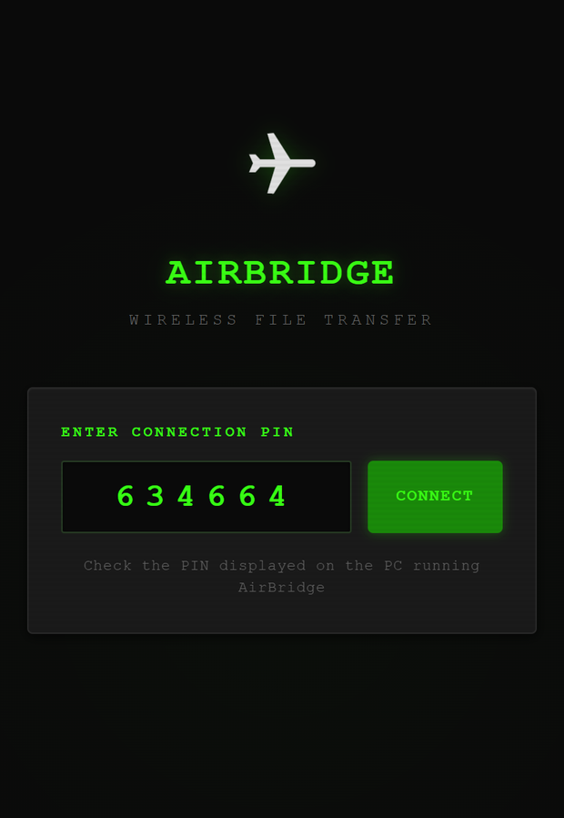
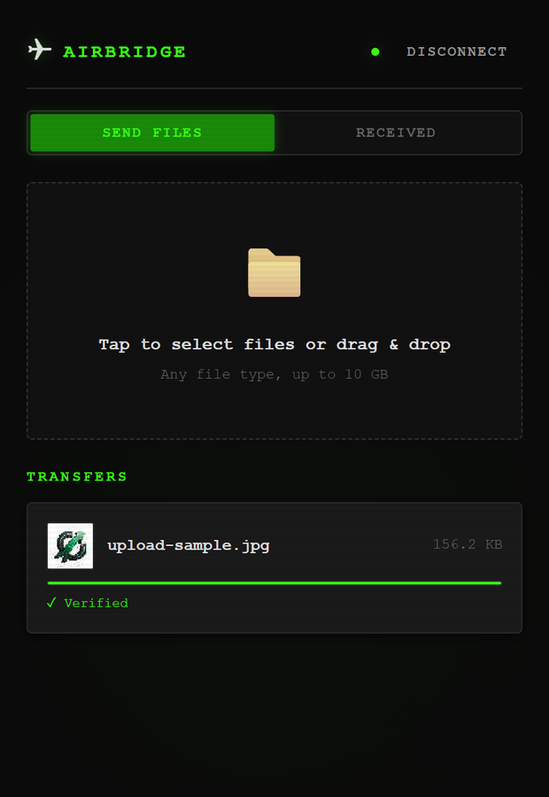
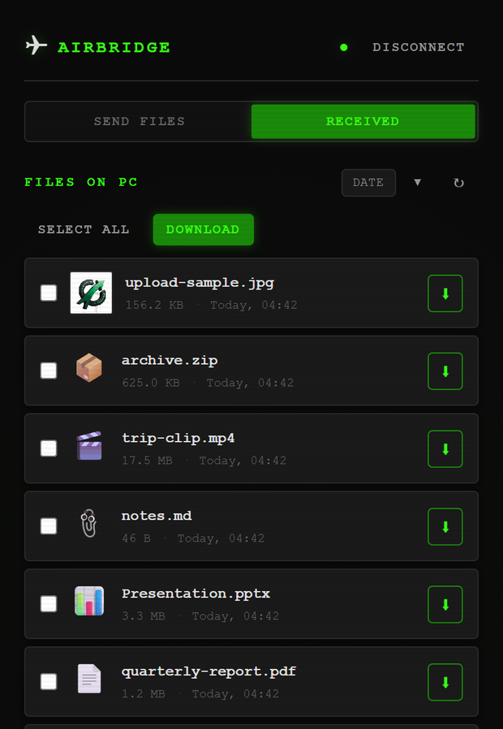

Local network · no cloud
Files between your computer and your phone. Nothing in between.
Run one command. Point the phone's camera at the code on screen. The phone opens a page and stays connected — no app to install, no account, and no path to the internet.
Python 3.10+ · Windows, Linux, macOS · source-available, non-commercial
The problem
Moving a file three metres should not need a server in another country
Getting a file from a Windows PC onto an iPhone is solved everywhere except between those two devices. AirDrop stops at the edge of Apple's ecosystem. A cable wants software and still argues about file types. Everything else uploads your file to somebody's datacentre so it can travel across the room.
Nothing to install
The phone's side is a web page. Safari, Chrome, whatever it already has. Nothing from an app store, nothing to keep updated.
Nothing leaves the room
The server runs on your computer and speaks only to your network. It works on a hotel Wi-Fi, and on a phone hotspot with mobile data switched off.
A session, not a one-shot
Stay connected. Send a batch, browse what has arrived, preview images, video, PDFs and text, pull files back the other way.
How it works
One server, one socket, both directions
Metadata travels as JSON text frames and file bytes as binary frames on the same WebSocket. Each chunk is written straight to disk and hashed as it goes, so memory does not grow with the file.
Your computer Phone or tablet
┌────────────────────┐ ┌────────────────────┐
│ python -m │ │ │
│ airbridge │ 1. scan the QR code │ Camera app │
│ │ ─────────────────────► │ │ │
│ ┌──────────────┐ │ │ ▼ │
│ │ aiohttp │ │ 2. TLS 1.3 handshake │ ┌──────────────┐ │
│ │ HTTPS + WSS │◄─┼────────────────────────┼─►│ Any modern │ │
│ │ │ │ AES-256-GCM │ │ browser - │ │
│ │ PIN auth │ │ │ │ no install │ │
│ │ SHA-256 │ │ 3. 64 KB chunks, │ └──────────────┘ │
│ └──────┬───────┘ │ either direction, │ │
│ │ │ resumable │ │
│ ~/Downloads/ │ 4. mDNS announce │ │
│ AirBridge_... │ ◄──────────────────────┤ airbridge.local │
└────────────────────┘ └────────────────────┘
└─ your router, or the phone's own hotspot ─┘
no path to the internet
- Interrupted transfers continue. An upload lands in a scratch file named for its declared size and is renamed into place only once whole. Reconnecting reports how many bytes survived; the phone sends the rest.
- Both ends hash independently. The browser computes SHA-256 as it sends and receives and compares against the server's digest, so a transfer reads Verified rather than merely Complete. A download that fails the check is discarded instead of handed over.
- Wrong PINs get expensive. Five failures in a minute lock that address out, doubling on repeat. Six digits is a million guesses and nothing was slowing them down.



Alternatives
Where this actually sits
The idea of a small LAN server with a QR code is not new, and there are good tools either side of this one. The combination is what is thin on the ground: nothing installed on the phone, nothing outside the network, and a session that behaves like an app.
| Tool | No app on the phone | Works with no internet | Ongoing session | Notes |
|---|---|---|---|---|
| AirDrop | ✓ | ✓ | ✕ | Apple devices only. No Windows, ever. |
| LocalSend | ✕ | ✓ | ✓ | Needs the app on both ends. Far more polished and better maintained — the right answer if installing an app is fine. |
| PairDrop | ✓ | ◑ | ✓ | A signalling server has to introduce the peers. Offline means self-hosting Node plus a STUN/TURN setup. |
| qrcp | ✓ | ✓ | ✕ | The closest thing to this. One-shot from the terminal — no session, no progress, no previews, and you supply your own certificate. |
| Windows Phone Link | ✓ | ✕ | ◑ | Phone to PC only, not the other way, and which file types work depends on the sending app. |
| Cloud drives | ✕ | ✕ | ✓ | The file leaves your network to travel across the room. |
| AirBridge | ✓ | ✓ | ✓ | Previews, batches, progress, resume and verified checksums. One person's tool, not a product. |
Said plainly: a LAN server that prints a QR code is a well-trodden idea, and chunked WebSocket transfer is ordinary engineering. What took real work here was making it survive Safari — meeting Apple's certificate rules exactly, keeping a way through when the certificate is not installed, and hashing multi-gigabyte files in a browser that will not lend you its crypto.
If you are happy to install an app on your phone, LocalSend is more capable and has a team behind it. This page would rather say so than pretend otherwise.
The hard part
Why a thing on your own network bothers with HTTPS
Not for the padlock. Browsers keep half their capabilities behind a
secure context: on a plain http://192.168.x.x page,
crypto.subtle is undefined and navigator.serviceWorker
does not exist. Offline caching is impossible before you write a line of
it. TLS also stops anyone else on the café Wi-Fi reading your file.
Trust once, not every network
No public authority will vouch for 192.168.1.5. AirBridge generates a local CA on first run and issues a server certificate under it, re-issued whenever your address changes. Move between Wi-Fi and a hotspot and the phone stays happy.
serverAuth, a DNS name, under 398 days
iOS rejects a TLS certificate missing any of these outright. The test suite asserts each requirement on its own, because breaking one breaks the product completely rather than degrading it.
Safari's WebSocket rule
Safari refuses a WebSocket to an untrusted certificate even after you accept the page warning — and every byte here moves over a WebSocket. So a plain port stays open one above the encrypted one; when the secure socket will not open, the page says why and offers that address with the PIN in it.
Install the certificate once and the warnings stop for good. Open
/ca.crt on the phone, then Settings → Profile Downloaded
→ Install, then Settings → General → About → Certificate Trust
Settings. The terminal prints its SHA-256 fingerprint so you can
check it is your machine and nobody else's.
Devices
Anything with a browser
The iPhone is what this was built for and the strictest case to satisfy, but nothing in the design is specific to it. Each of these was put through a real transfer, not read off the code.
| Device | Pairs | Transfers | Verifies checksum | Offline cache |
|---|---|---|---|---|
| iPhone — Safari, iOS 15+ | ✓ | ✓ | ✓ | ✓† |
| iPad | ✓ | ✓ | ✓ | ✓† |
| Android phone — Chrome | ✓ | ✓ | ✓ | ✓ |
| Android tablet | ✓ | ✓ | ✓ | ✓ |
| Another desktop browser | ✓ | ✓ | ✓ | ✓ |
† After the certificate is installed. Without it Safari falls back to the unencrypted port, where browsers disable offline caching.
Install
Two lines
$ pip install git+https://github.com/nkVas1/AirBridge $ airbridge
Or take the release
— a wheel, a source tarball and a zip, each with its SHA-256 in the notes.
From a checkout, start.bat on Windows and start.sh
elsewhere build a virtual environment first.
Useful switches
--port moves both listeners.
--downloads-dir chooses where files land.
--no-tls serves plain HTTP only.
--no-http-fallback closes the unencrypted port.
With no internet at all
Turn on the phone's hotspot with mobile data off, join the computer to it, and run AirBridge. Both devices are then on a network with no route out, which is the point.
Straight to the release
Honestly
What it does not do
Named here rather than discovered later.
- Downloads do not resume. Uploads do. A file pulled from the computer to the phone starts over if the connection drops.
- One PIN, one person. No separate users, and anyone with the PIN sees everything in the downloads folder.
- The PIN rides in the pairing link. That is what makes the QR code work in a stock camera app. The page strips it from the address bar after connecting, but query strings leak.
- The certificate needs installing for a warning-free encrypted connection. One tap, once per device, and it is a private authority living on your machine — remove it in Certificate Trust Settings whenever you like.
- mDNS is best-effort.
airbridge.localdoes not resolve on every network; the numeric address always works. - 10 GB per file, and files only — no directory upload.
- Nothing here has been security-audited. It is one person's tool, published as-is.